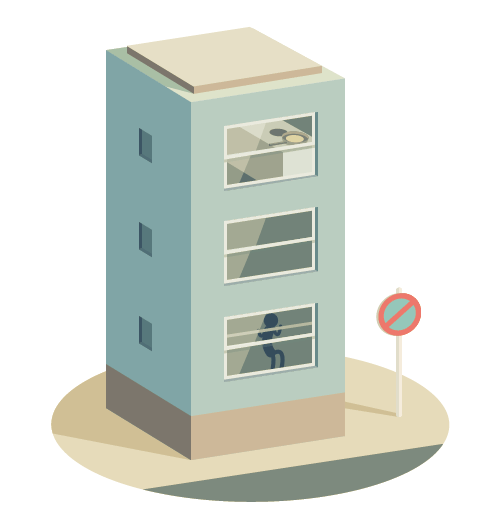

<mat-toolbar color="primary">
  <button [matMenuTriggerFor]="buildingsMenu" mat-icon-button class="example-icon" aria-label=" icon-button with menu icon">
    <mat-icon>menu</mat-icon>
  </button>
  <mat-menu #buildingsMenu="matMenu">
    <button mat-menu-item (click)="goToCreateBuilding()">
      <span>Create</span>
    </button>
    <button mat-menu-item (click)="goToEditBuilding()">
      <span>Edit</span>
    </button>
    <button mat-menu-item (click)="goToListAllBuildings()">
      <span>List All</span>
    </button>
    <button mat-menu-item (click)="goToListMinMaxBuildings()">
      <span>List Min Max</span>
    </button>
    <button mat-menu-item (click)="goToGestorDeCampus()">
      <span>Back</span>
    </button>
  </mat-menu>

  <span>Buildings</span>
  <span class="spacer"></span>
  <button mat-icon-button class="example-icon" aria-label=" icon-button with menu icon" (click)="goToLogin()">
    <mat-icon>home</mat-icon>
  </button>
</mat-toolbar>
<body class="Building">
<div class="container">
  <h1 class="text-center">Bem-vindo à página dos Edifícios</h1>
  
</div>
</body>
